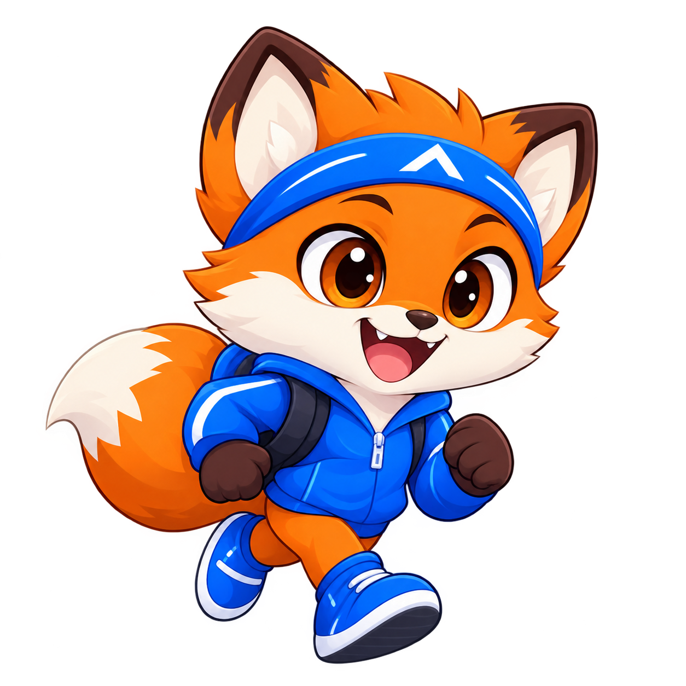
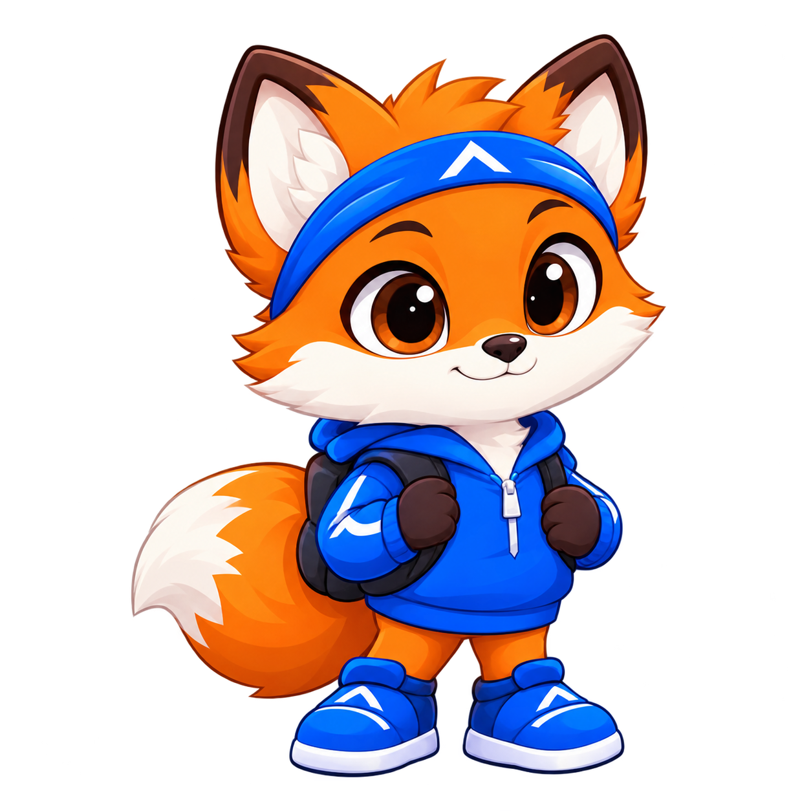

2 runs a day keeps the scroll away.
Foxit is your pocket running coach — a cheeky fox who helps you set a daily meter goal, schedule morning & afternoon runs, pick a spot on a live map, and keep the streak alive.
Small runs. Big habit.
Zero guilt-tripping.
Everything in the app is designed to get you out the door — not to sell you shoes. Set it once, tap run! daily, watch the week light up.
Meter goals that fit you
100 m to 50 km per day. Quick chips for 1k, 2k, 5k, 10k. Split automatically across your runs.
1–3 runs on your schedule
Morning, midday, evening — type hour : minutes + AM/PM. Adjust count anytime with the stepper.
Live map, real streets
Leaflet + OpenStreetMap with GPS centering, world-wide search, zoom controls, and routing to your spot.
Spots + start point
Park Loop, Riverside, Track, Hill Trail — or tap the map to add your own. Drop a 🏁 start and get a driving-style route.
One-tap GPS tracking
Hit run! → live arrow, distance + timer. Hit stop → saved to history, confetti, run checked off.
Streaks that stick
Mon–Sun week view, day streak counter, tips from Foxit every tap. Works offline — chips still work.
From “maybe later” to “done” in 4 taps.
This is the real app flow — click any step to try it live.

Meet Foxit
Cheeky fox, big energy. Sets the vibe: run morning & afternoon.
Open welcome →
Pick your meters
How many meters is your daily goal? Start with 2000 m.
Open goal picker →1, 2 or 3 runs?
Then set exact times with the alarm editor. Foxit remembers.
Open planner →
Pick spot → run!
Live map, GPS arrow, streak week. Tap the fox for tips.
Open dashboard →Not a screenshot. A real running map.
The dashboard (try it) centers on you, draws loop routes for each spot, and routes you from 🏁 start to 📍 spot via OSRM — with a straight-line fallback offline.
- ✓4 built-in spots — Park Loop 800 m, Riverside 1200 m, Track 400 m, Hill Trail 1500 m, each with animated dashed loops.
- ✓+ spot mode — arm it, tap anywhere, name it, set meters. Delete with × on the chip.
- ✓▶ start mode — set your start, get distance + ETA “pe drum” in the pill.
- ✓🔍 world search — Nominatim-powered, fly-to animation anywhere on Earth.
foxit_username → "fox_runner"
foxit_goal_meters → "2000"
foxit_runs_per_day → "2"
foxit_run_times → [{h:7,m:0,ampm:"AM"}, …]
foxit_spot → "park" · foxit_start → {lat,lng}
foxit_log → { "2026-09-21": {done:[true,false]} }
foxit_tracks → [{meters:812, secs:342}]
foxit_custom_spots → []
Tracking that respects you
GPS only starts after you press run!. Accuracy filter (>30 m ignored), 3 m movement threshold, high-accuracy watch. Stop → distance saved, next run auto-checked, week re-rendered.
run! → getCurrentPosition → watchPosition
arrow rotate by bearing · panTo(you)
tick: 812 m · 5:42 · tap stop to finish
stop → confetti(x,y) + toast “Saved! 812 m” 🎉
One fox, many moods.
Sporty, encouraging, slightly sassy. He lives in the app — tap him on the dashboard for tips.
 Focusedloading screen · breathe animationHype buddywelcome · wave animation
Focusedloading screen · breathe animationHype buddywelcome · wave animation Curioususername screen
Curioususername screen Punctualschedule screen
Punctualschedule screenQuick answers.
Is Foxit free?
Yes — this prototype runs entirely in your browser with free maps (OpenStreetMap), free routing (OSRM) and free search (Nominatim). No keys, no backend. Your data stays in localStorage on your device.
Do I need to install anything?
No. Open index.html to start onboarding, or jump straight to dashboard.html. For GPS, open via a secure context (https or http://127.0.0.1) and allow location.
How do streaks work?
Each day has 1–3 run slots. Finish at least one and the day counts. The counter walks back day-by-day from today (or yesterday if today isn’t done yet). The week strip shows Mon–Sun with ✓ for hit days.
Can I run offline?
Partially. Chips, spots, timers and logs all work offline. Live tiles, routing and search need internet — the app shows an “Offline — map paused” note and falls back to straight lines.
Where is my data?
In your browser’s localStorage under keys like foxit_log and foxit_tracks. Clear site data to reset. Nothing is uploaded anywhere.
Ready? Foxit’s waiting. 🦊
Set a 2000 m goal. Run morning & afternoon. Feel smug by dinner.